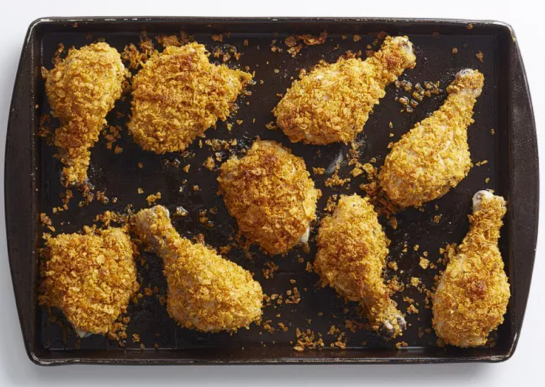

Odin Recipes
Odin has many names and is the god of both war and death.
Oven Fried Chicken
Description
I love fried chicken, but it takes so long and is such a big mess. I came up with this oven-fried version, and have been making it ever since! Everyone I have given the recipe to has loved it as well.
Cut down on oil by making "fried" chicken in the oven. This oven-fried chicken recipe, made with simple ingredients you probably already have on hand, is as good as it gets.
Ingredients
- 12 chicken thighs
- 1 cup all-purpose flour
- salt and pepper to taste
- 1 cup Italian seasoned bread crumbs
- 3 eggs
- Half cup vegetable oil
- 1 teaspoon paprika
Directions
Step 1: Preheat the oven to 350 degrees F (175 degrees C).
Step 2: Place flour in a shallow plate or bowl and season with salt and pepper to taste. Put bread crumbs in another shallow plate or bowl and beat eggs in another bowl.
Step 3: Dredge chicken piece by piece in the flour, then the egg, then the bread crumbs, until all pieces are coated.
Step 4: Pour oil into a large baking dish; add the breaded chicken thighs and sprinkle with paprika to taste.
Step 5: Bake in the preheated oven for 30 minutes, then turn pieces over and bake for another 30 minutes. Remove from the oven and drain on paper towels.
Step 6: Serve hot and enjoy!
Back to the main page
Original Recipe